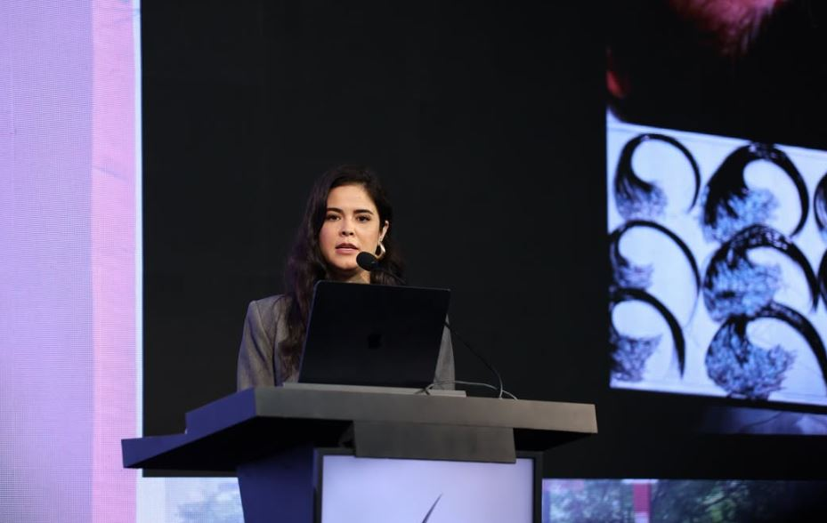
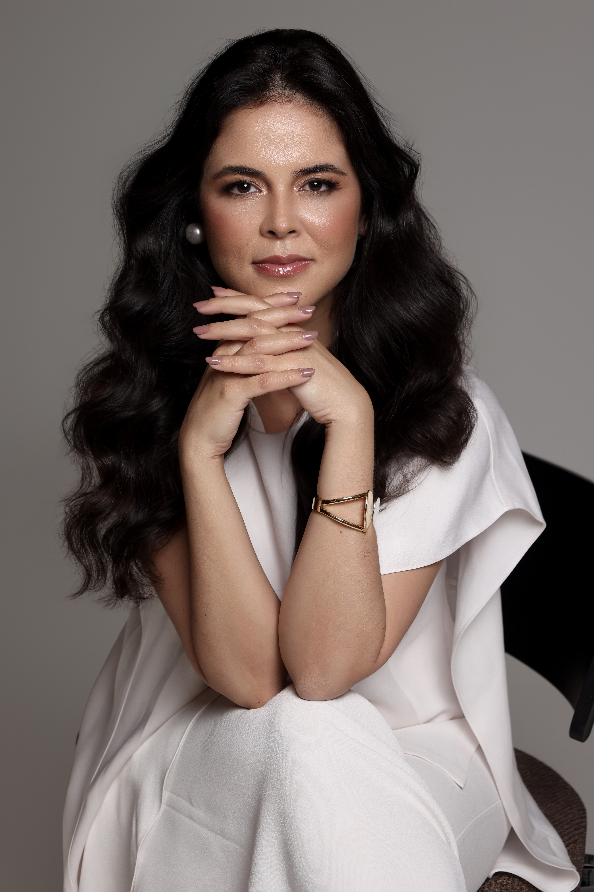
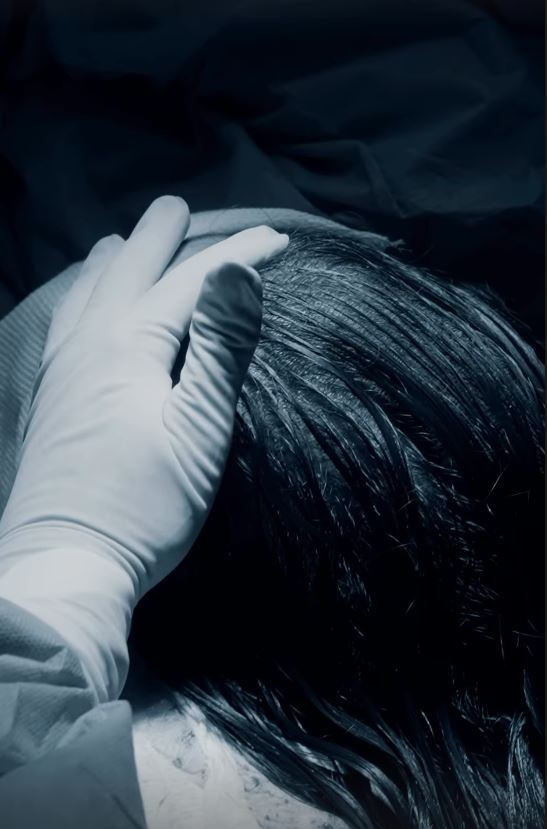
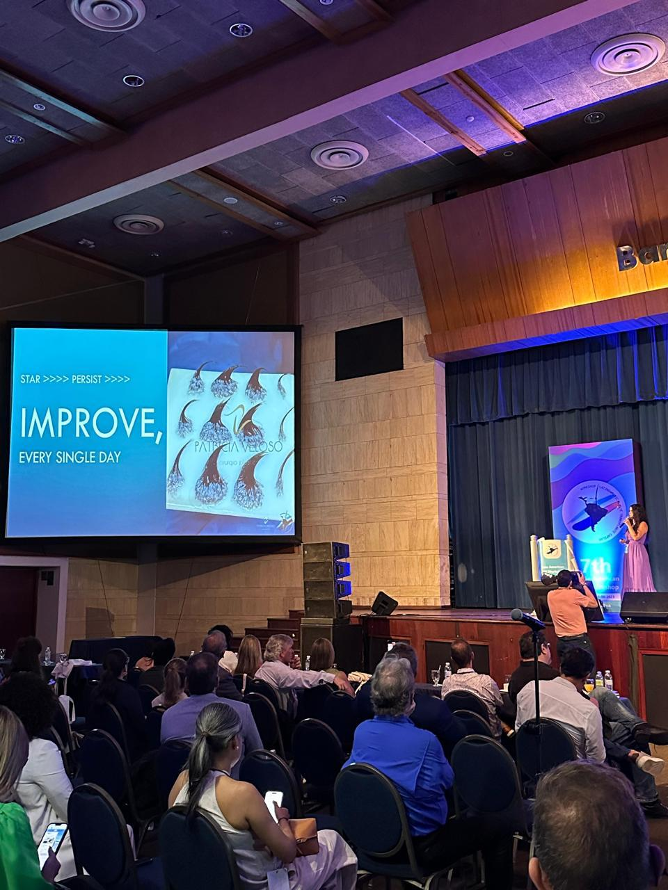
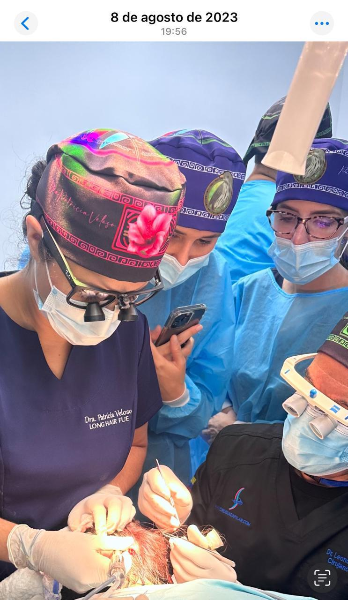

Já realizam transplante capilar
Desejam avaliar a incorporação do Long Hair FUE e discutir planejamento, densidade, direção e angulação com mais critério.
.png) Garanta a sua vaga agora
Garanta a sua vaga agora

Um encontro presencial para médicos que querem compreender o que realmente muda quando o cabelo deixa de ser raspado e passa a funcionar como referência durante a cirurgia.

Em menos de 1 minuto, responda perguntas objetivas sobre sua experiência e seus objetivos na técnica Long Hair FUE. O quiz ajuda você a entender se este workshop pode acelerar sua evolução — seja para começar com mais segurança ou para refinar planejamento, implantação e condução de casos avançados.
Carregando próxima etapa…

Quem conduzirá o workshop
Cirurgiã Plástica, CRM-MG 50766 e RQE 34013, a Dra. Patricia Veloso é reconhecida como a Nº1 do mundo em implantação Long Hair FUE e pioneira no procedimento, com atuação internacional em congressos, workshops médicos e discussões técnicas sobre casos de alta complexidade.
Neste workshop presencial, ela compartilha o raciocínio por trás do planejamento, da extração, da organização da equipe e da implantação com fios longos — incluindo aprendizados de casos extensos e megassessões, como procedimentos com até 6.000 folículos em uma sessão, quando clinicamente indicados e documentados.
Para o paciente, preservar o cabelo significa discrição. Para o cirurgião, significa trabalhar com uma referência que permanece visível durante o procedimento.
Direção. Angulação. Distribuição. Relação com os fios preexistentes. Cobertura visual.
Quando o fio permanece longo, essas informações continuam diante dos seus olhos. Mas isso também traz novas exigências: extração, manipulação, implantação, organização da equipe e controle do tempo precisam responder a uma cirurgia mais complexa.
O Workshop Long Hair FUE foi criado para organizar esse raciocínio — sem reduzir a técnica a uma promessa de “não raspar”.

Mulheres, executivos, profissionais expostos e pessoas que valorizam privacidade podem adiar a cirurgia porque não querem atravessar o período de cabelo raspado.
O Long Hair FUE cria uma alternativa a ser avaliada com indicação correta, planejamento e domínio operacional. Para o médico, isso pode significar atender uma demanda antes invisível e elevar a experiência percebida pelo paciente — sem transformar inovação em promessa automática de resultado.
.png)
Diferenças entre Shaved FUE, No-Shave FUE e Long Hair FUE.
Indicação e seleção de pacientes.
Leitura e preservação da área doadora.
Planejamento da área receptora.
Extração e manipulação de unidades foliculares com fios longos.
Direção, angulação, distribuição e cobertura visual.
Instrumentais e configurações.
Estratégias de implantação.
Organização da equipe e otimização do tempo.
Casos femininos e masculinos.
Áreas extensas e desafios de mega sessões.
Casos clínicos, erros, limites e dificuldades.
Densidade não é simplesmente perseguir o maior número possível de unidades foliculares por centímetro quadrado.
Cobertura visual depende de calibre, comprimento, direção, angulação, distribuição e integração com os fios preexistentes. No Long Hair FUE, o cirurgião preserva uma referência visual imediata da construção — sabendo que essa prévia não representa o resultado definitivo e que o ciclo biológico seguirá após a cirurgia.
No workshop, Dra. Patricia apresentará como esse raciocínio orienta o planejamento dos seus casos.
Casos conduzidos pela Dra. Patricia Veloso em homens e mulheres demonstram como o método Long Hair FUE permite observar a construção da cobertura ainda no pós-operatório imediato, preservando os fios longos como referência visual durante o planejamento e a implantação.
Procedimentos realizados com método Long Hair FUE pela Dra. Patricia Veloso, pioneira na técnica e referência internacional no ensino do procedimento.

Como planejar quando milhares de unidades foliculares precisam ser extraídas e implantadas mantendo fios longos? Como reduzir interferências? Como preservar a área doadora? Como sincronizar equipe, tempo e diferentes regiões receptoras?
Grandes sessões ampliam a consequência de cada decisão. Por isso, o workshop dedica um bloco ao raciocínio operacional por trás desses casos — incluindo limites, dificuldades e critérios de indicação.
Desejam avaliar a incorporação do Long Hair FUE e discutir planejamento, densidade, direção e angulação com mais critério.
Querem entender as diferenças do trabalho com fios longos, seus requisitos operacionais e limites.
Inclui médicos que recebem mulheres, executivos, profissionais expostos e pacientes que valorizam privacidade.
Buscam discutir logística de equipe, tempo, área doadora, regiões receptoras e mega sessões.
Querem entender requisitos, responsabilidades e curva técnica antes de investir na área.
A inscrição será conduzida pela equipe oficial, com orientação sobre disponibilidade, critérios médicos e próximos passos.
A trajetória acadêmica e cirúrgica da Dra. Patricia Veloso reforça sua atuação acadêmica e cirúrgica em Long Hair FUE, reunindo ensino médico, apresentações internacionais e discussão criteriosa de casos complexos.




Sim. O evento é presencial e exclusivo para médicos. A equipe informará como ocorrerá a validação do CRM no processo de inscrição.
Não necessariamente. Médicos que já realizam FUE terão maior profundidade técnica; quem está avaliando entrar na área compreenderá fundamentos e requisitos. O workshop não habilita, sozinho, a executar a técnica.
Não há prática em paciente confirmada para o workshop principal. O encontro é dedicado a conteúdo técnico, planejamento e discussão de casos. Eventuais experiências práticas terão formato, critérios e vagas próprios.
Não necessariamente. No Long Hair FUE, as unidades foliculares são manejadas mantendo os fios longos, o que preserva referências visuais específicas. A classificação e os limites serão detalhados no evento.
A emissão de certificado será confirmada pela equipe responsável pela inscrição.
Não há inclusão confirmada de hospedagem ou deslocamento. Planeje despesas de viagem separadamente e confirme detalhes logísticos com a equipe.
As regras de transferência e cancelamento serão informadas pela equipe antes da confirmação da inscrição.
Clique nos botões da página para acessar a seção de inscrição e acompanhar as orientações oficiais sobre disponibilidade e próximos passos.